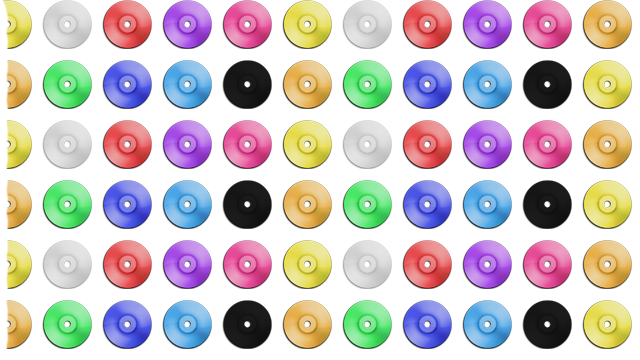

About
Music Genre’s
Underground music is a range of multiple music genres such as drum & bass, Dubstep and house. Underground music is music, which is hardly recognised in the UK and the rest of the world because most of the sounds are played through pirate radio stations, also can be played on main radio station but mainly after hours from times between midnight & 6am. Underground has evolved because of social media and technology but still forever in the shadows of commercial music. Clubs hardly play underground music but when they do they generate big crowds, local talented artist create events such as free parties but majority of the public call these illegal raves. Most of the sounds are produced from local underground talent within cities or in other international suburbs, underground music made by artist that like to keep their sound between the underground communities.
Underground music is not music to the older generation but is creeping into some generation of the house and drum & bass because these two styles have been going on for 20-25 years, however most of that generation have grown out of this sort of music. Only a few sound of underground become mainstream after a lot of people like the song or if a mainstream artist collaborates with an underground artist to make a song, after this the underground artist has more global recognition, which could lead to the artist to make more songs mainstream however the music genre will stay outside of the mainstream culture.
Dubstep
This music genre started in the late 1990’s and grew bigger and bigger years later. Dubstep is an electronic dance music, which began in its home in south London and now is played all over the world with countries such as japan and the United States from artists such as Goth Trad and Downlink.
The music runs at 140 BPM which is the same as grime instrumentals. Grime and Dubstep beats do mix together and grime artists will use Dubstep beats to make a song with. Croydon London is the home of Dubstep in the UK artist such as Hijak and Skream Dj’s that have changed the way this music has advanced over years from wobble bass to futuristic sounds of doctor P.
There are three different styles of Dubstep which have be branded from three different groups in Dubstep. There is original Dubstep that has similarities two the other two styles, however this is basic wobble and bass with not too much bass or bass over powering the tracks. The over style sub-dub this sounds slower but is played at the same BPM as original Dubstep and contains more of a bass feature which can overpower low quality speakers. Futuristic Dubstep came in the late 2000 (naughty’s) this is where the music sounds mash up and contains a lot of wobble and is present in adverts on commercial breaks.
House
This music started in the mid 1980’s and has grown over many years and has created many different sub-genres around this sound. Although house music was created many years ago this electronic dance music sound is still an underground music sound. There are different sub-genres in house such as Tech house, minimal, deep house, which lead the way on their own in this music genre.
Tech house is now a more popular type of house music has background from 1986 in Detroit and Chicago. This sort of sound has elements of techno in the sounds to make the music have big kicks and also more snares to make more of a groovy sort of sound. Top djs that play this sound include Anthea and Alex Celler they have excelled these sounds in the UK and have been travelling around European festivals. Minimal is also very similar with less kick and equal snare the sound is more normal because the sounds are level.
Deep house is the most popular type of house around in the UK these sounds have a mixture of all sort some sounds can be more tech-house like with more kick and snare or some sounds can be more progressive and sound can recurrence over and over, there are also sound great vocal tunes around through some top talented artist. Most people think top artist like Jamie jones play the best the is to offer in deep house. This sound runs from slow tempo of 112BPM and goes up to 125BPM
Drum and bass
This music has evolved from jungle music in the early 1990’s the music sound is very fast paced and is the main source of underground the public recognise. This music rooted from Jamaican British youth roots and now has incorporated its own sound through the UK and international scene. This music genre has a culture feeling to the music as well, like the hippies did with the beetles there is Rasta’s of different ethnicity of white and black. The drum and bass culture is a lot of energy with fast paced songs compared to any other music genre out there. Raves have a lot of stamina because how face they move.
Top labels including Hospitality, Metal headz and Ram records have produced the best there is in the UK. The sounds have started in illegal raves which still continue today. The most important think about drum and bass the raves can be started anywhere because the beat is easy to flow with and the tempo can bring anyone up when they are feeling low. This sound runs at a fast BPM of 176BPM to 184BPM. From late 1990’s to early 2000’s this sound broke from jungle and hardly used vocal however towards the end of 200’s vocal are back but using different vocal effects from the old reggae ones they had. This tech step fast paced music as a lot of kicks and snare in the 8 bars and makes a good drum kit beat that goes over and over and with a few other sounds multiple songs can be made.